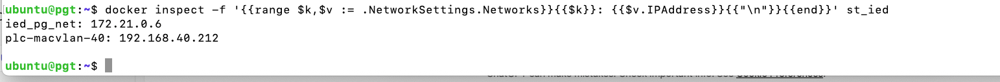

You cannot have two VMs using the same IP address on the same network — just like two computers cannot share the same IP. If you try, you’ll get:
- ARP conflicts
- Connection drops
- One VM unreachable
- Network instability
✅ Each VM on the bridged network must have its own unique IP.
✅ Why both VMs showed the same IP earlier
This means one of the following:
1. The new VM was cloned without changing the MAC address
VirtualBox clones sometimes copy the network interface MAC → DHCP sees the same MAC → assigns the same IP.
2. You imported an appliance (.ova) that preserved the old MAC
The OVA contains the old VM’s MAC address.
✅ Fix: Give the VM a new MAC, then it will get a new IP.
✅ How to fix and get a unique IP for your new VM
✅ Step 1 — Change the MAC Address in VirtualBox
- Power off the VM.
- Go to VirtualBox → Settings → Network → Adapter 1
-
Ensure:
-
Attached to: Bridged Adapter
- Click the refresh icon next to MAC Address to generate a new one.
Example:
Old MAC: 0800275A3C1D
New MAC: 080027B9A622
- Save and start the VM.
✅ Step 2 — Inside the VM, ask DHCP for a new IP
Inside the VM:
sudo dhclient -r
sudo dhclient
Then check the new IP:
ip a | grep 192
You should now see a different IP such as:
192.168.30.61
192.168.30.72
192.168.30.85
✅ Step 3 — SSH into the new IP
From your Mac:
ssh ubuntu@<new-ip>
✅ Step 4 — (Optional) Make the new IP static
If you want, you can set:
- VM1 → 192.168.30.60
- VM2 → 192.168.30.61
I can guide you through setting static IP if needed.
✅ Summary
| Issue | Solution |
|---|---|
| Both VMs have same IP | Change MAC address in VirtualBox |
| DHPC gives same IP | Release/renew with dhclient |
| VM unreachable | Restart VM after MAC change |
✅ After the MAC change, your VM will always receive a different unique IP.
If you want, send me:
✅ Your current VirtualBox Network settings screenshot
✅ ip a output from both VMs
…and I’ll verify the correct configuration for you.
Question : if I do the steps above, will the ip address of the VM change each time I log out and log off or reboot the VM ?
Short answer: No — the IP will NOT keep changing, as long as you do one thing: ✅ Keep the MAC address fixed after you set it.
Let me explain clearly:
✅ After you change the MAC once → DHCP assigns a fixed IP and remembers it
On most networks (home routers, office DHCP), DHCP uses the MAC address to give the same IP every time.
So:
✅ If the MAC stays the same
Then your VM will usually get the same IP every reboot.
Example: New MAC → 192.168.30.72 Next reboot → DHCP will likely give 192.168.30.72 again.
❌ If you keep changing the MAC
The VM will get different IPs each time.
✅ What each step actually changes
✅ Step 1 — Change MAC in VirtualBox
Purpose: ensure the VM gets a unique IP different from your other VM. Once changed, leave it as is.
✅ Step 2 — dhclient
This only refreshes the IP once. It does not make it dynamic or unstable.
✅ Step 3 — SSH into VM
Normal usage.
✅ Step 4 — Static IP (optional)
If you want absolute stability, assign a static IP:
- VM1 → 192.168.30.60
- VM2 → 192.168.30.61
Then it will never change, even if DHCP fails.
✅ TL;DR — What will happen after reboot?
✅ IP stays the same, because DHCP assigns IP based on the VM’s new MAC. ❌ IP will change only if:
- you change the MAC again, or
- your network regularly resets its DHCP leases (rare).
✅ Do you want the IP of the extracted VM to always stay the same?
If yes, I can give you a simple static IP config file for Ubuntu 22.04 (netplan).
Question: based on output below, which ip should I use to ssh into the VM
ubuntu@pgt: $ sudo dhclient -r
ubuntu@pgt: $ sudo dhclient
ubuntu@pgt:~$ ip a | grep 192
inet 192.168.30.60/24 brd 192.168.30.255 scope global enp0s3
inet 192.168.30.54/24 brd 192.168.30.255 scope global secondary dynamic enp0s3
inet 192.168.40.254/24 scope global macvlano
inet 192.168.40.250/24 scope global macvlan-host
ubuntu@pgt: $
Use 192.168.30.54 for SSH — and here’s why.
✅ Understanding Your IP Addresses
Your output:
inet 192.168.30.60/24 brd 192.168.30.255 scope global enp0s3
inet 192.168.30.54/24 brd 192.168.30.255 scope global secondary dynamic enp0s3
inet 192.168.40.254/24 scope global macvlano
inet 192.168.40.250/24 scope global macvlan-host
✅ Which IP belongs to your VM for normal network access?
Look at the interface:
enp0s3 → the NAT/Bridged Adapter interface used for SSH
It has two IPs:
192.168.30.60(primary)192.168.30.54(secondary, dynamic)
Now you said earlier:
there is already another VM that I have ssh-ed into that uses the IP 192.168.30.60
✅ So 192.168.30.60 is used by your other VM. ✅ Your new VM therefore must use the other IP on enp0s3 → 192.168.30.54.
✅ Why not the 192.168.40.x addresses?
inet 192.168.40.254 … macvlano
inet 192.168.40.250 … macvlan-host
These are Macvlan virtual interfaces used by your PLC/IED/docker networks. They cannot be SSH’d directly from your laptop.
So ignore 192.168.40.xxx for SSH.
✅ ✅ Final Answer
SSH into your new VM using:
ssh ubuntu@192.168.30.54
If connection fails, tell me and I’ll help you confirm: ✅ which interface is bridged ✅ whether SSH is running ✅ whether Windows host firewall is interfering.
Want me to help you make this IP stable so it never changes again?
Perfect — this explains exactly why your second VM keeps getting the same IP (192.168.30.60) and causes conflicts.
Let’s unpack this and fix it properly 👇
🧠 What’s happening
Your /etc/netplan/*.yaml shows this:
network:
version: 2
renderer: networkd
ethernets:
enp0s3:
dhcp4: no
addresses:
- 192.168.30.60/24
routes:
- to: default
via: 192.168.30.1
nameservers:
addresses:
- 8.8.8.8
- 8.8.4.4
That line
addresses:
- 192.168.30.60/24
means your VM is using a static IP (192.168.30.60) instead of DHCP.
So — both VMs having that same YAML config → both use .60 → IP conflict.
✅ Fix — give this VM a new unique IP
Option 1: Set a new static IP (recommended)
Edit the YAML file:
sudo nano /etc/netplan/*.yaml
Change this line:
addresses:
- 192.168.30.60/24
to something like:
addresses:
- 192.168.30.61/24
Then apply the change:
sudo netplan apply
Verify:
ip a | grep 192
You should see:
inet 192.168.30.61/24 brd 192.168.30.255 scope global enp0s3
Option 2: Switch back to DHCP (if you want IPs assigned automatically)
Edit the YAML again and change:
dhcp4: no
to:
dhcp4: yes
Remove (or comment out) the addresses, routes, and nameservers lines.
Then apply:
sudo netplan apply
DHCP will now assign a new IP (e.g. 192.168.30.54).
Check it:
ip a | grep 192
⚠️ Important
After changing the IP:
- Make sure your other VM stays on
192.168.30.60 - SSH to this new one with the new IP:
bash
ssh ubuntu@192.168.30.61
* Both VMs can now coexist on the same network with no conflict.
Would you like me to help you decide whether to keep static IPs or switch to DHCP (depending on how you use these VMs)?
Question: why is the IP address changing and what to do now ?
ubuntu@pgt:~$ ls -l /etc/netplan
total 8
-rw------ 1 root root 270 Nov 11 05:37 01-netcfg.yaml
drwxr-xr-x 2 root root 4096 Oct 21 06:55 backup
ubuntu@pgt:~$ cat backup
cat: backup: No such file or directory
ubuntu@pgt:~$ cd backup
ubuntu@pgt: $-bash: cd: backup: No such file or directory.
ubuntu@pgt:~$ grep -R "network" /etc/cloud/cloud.cfg
network: activators: ['netplan', 'eni', 'network-manager', 'networkd']
ubuntu@pgt: $
Your VM’s IP address is changing because netplan is NOT the only thing configuring the network.
Based on your output, the root cause is clear:
✅ ROOT CAUSE — cloud-init is still managing networking
You ran:
grep -R "network" /etc/cloud/cloud.cfg
And got:
network:
activators: ['netplan', 'eni', 'network-manager', 'networkd']
✅ This means cloud-init is active and allowed to manage networking, and it is overriding your static netplan config on every reboot.
This is exactly why:
- Your IP keeps reverting to a DHCP IP like 192.168.30.54
sudo netplan applyworks temporarily- After reboot, it changes again
Cloud-init re-applies its own config early in the boot process, overwriting your netplan settings.
✅ Second clue: Only one netplan file exists
/etc/netplan/01-netcfg.yaml
This is good — it means the conflict is not from multiple netplan files. The conflict is external → cloud-init.
✅ ✅ ✅ What you must do now
✅ Step 1 — Disable cloud-init networking completely
Create this file:
sudo nano /etc/cloud/cloud.cfg.d/99-disable-network-config.cfg
Add ONLY this:
network: {config: disabled}
Save → exit.
This tells cloud-init:
❌ "DO NOT touch networking again."
✅ Step 2 — Prevent cloud-init from generating netplan at boot
Run:
sudo touch /etc/cloud/cloud-init.disabled
(This disables cloud-init completely—safe for VMs that no longer use cloud provisioning.)
✅ Step 3 — Re-apply your permanent static netplan config
Edit your file:
sudo nano /etc/netplan/01-netcfg.yaml
It should look like:
network:
version: 2
renderer: networkd
ethernets:
enp0s3:
dhcp4: no
addresses:
- 192.168.30.61/24
gateway4: 192.168.30.1
nameservers:
addresses: [8.8.8.8, 8.8.4.4]
Apply:
sudo netplan generate
sudo netplan apply
✅ Step 4 — REBOOT
sudo reboot
After reboot, check:
ip a | grep 192
✅ You should now only see your static IP ✅ It will remain permanent ✅ It will not change again unless you modify netplan manually
✅ Summary: Why the IP kept changing
| Component | Behavior |
|---|---|
| netplan | You set static IP manually |
| cloud-init | Overrode netplan on every boot → set DHCP |
| Result | Static IP temporarily works, but changes after reboot |
✅ If you show me your /etc/netplan/01-netcfg.yaml, I can verify it's correct before you reboot.
Just send:
cat /etc/netplan/01-netcfg.yaml
Checking ip address of a Docker container
Finding ip address of docker container:
ubuntu@pgt:~$ docker inspect -f '{{range $k,$v := .NetworkSettings.Networks}}{{$k}}: {{$v.IPAddress}}{{"\n"}}{{end}}' st_ied ied_pg_net: 172.21.0.6 plc-macvlan-40: 192.168.40.212
ubuntu@pgt:~$

docker inspect -f '{{range $k,$v := .NetworkSettings.Networks}}{{$k}}: {{$v.IPAddress}}{{"\n"}}{{end}}' st_ied